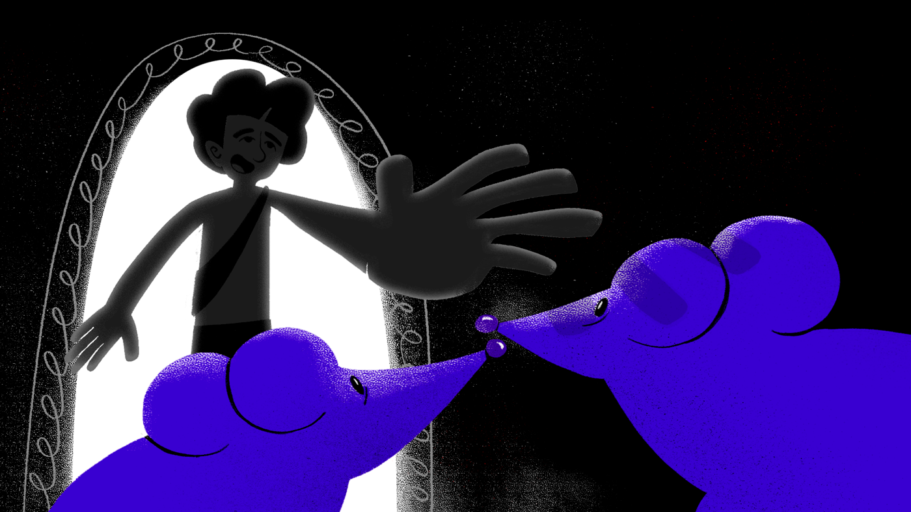
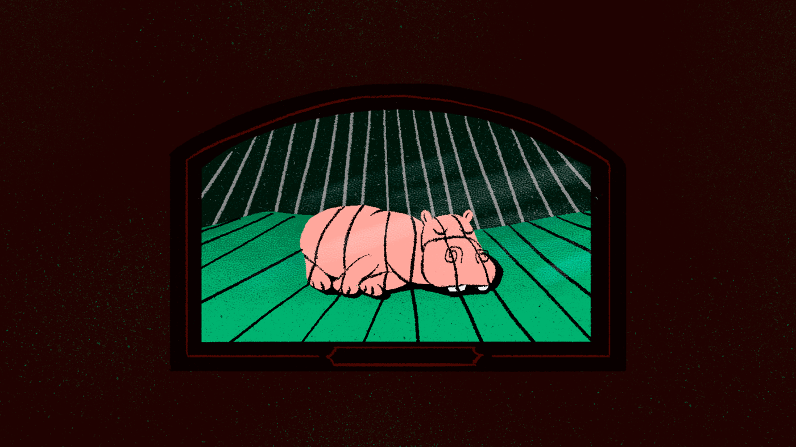
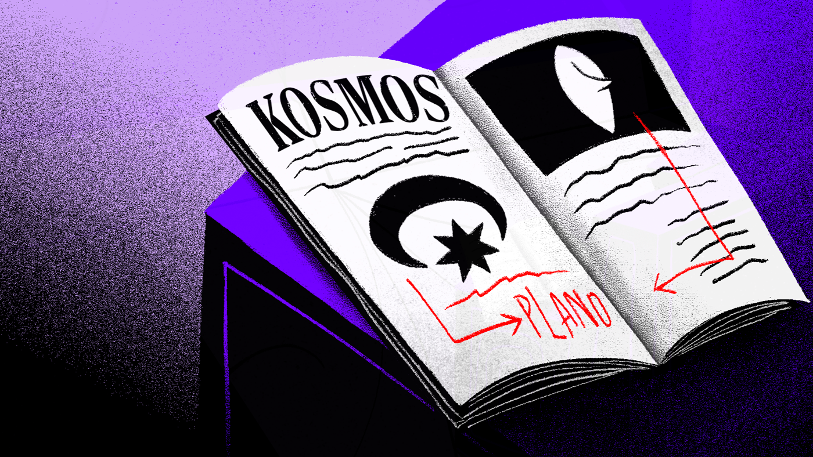
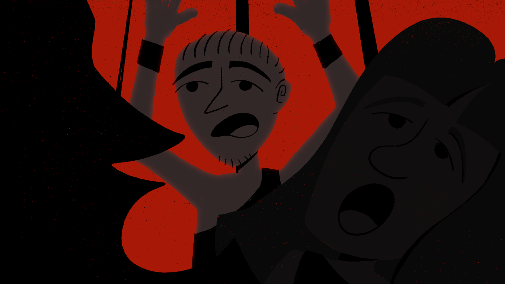
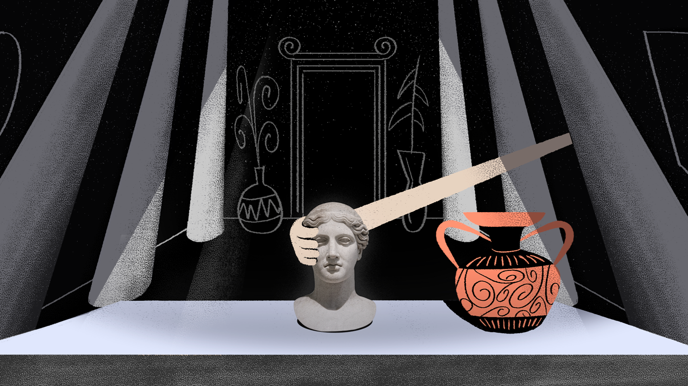
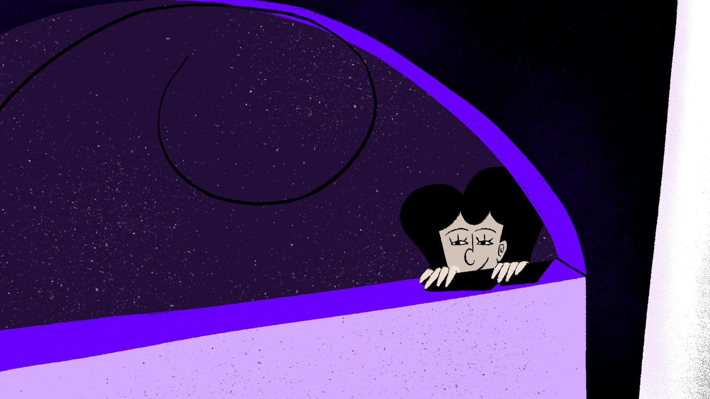
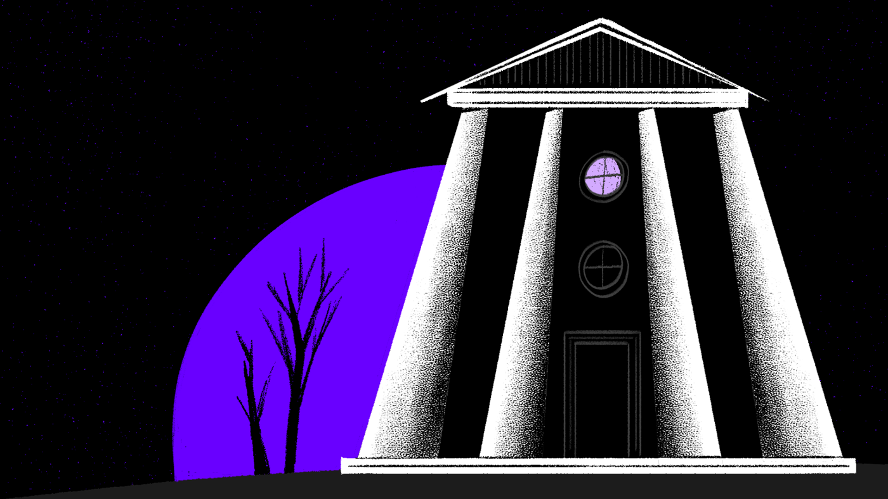

Ilustrações e animação para um trabalho interdisciplinar do curso de Design Gráfico da Universidade Estadual de Londrina. O objetivo era criar um spin-off a partir do Conto Alexandrino do autor Machado de Assis e desenvolver um projeto transmídia, dando vida à história.







